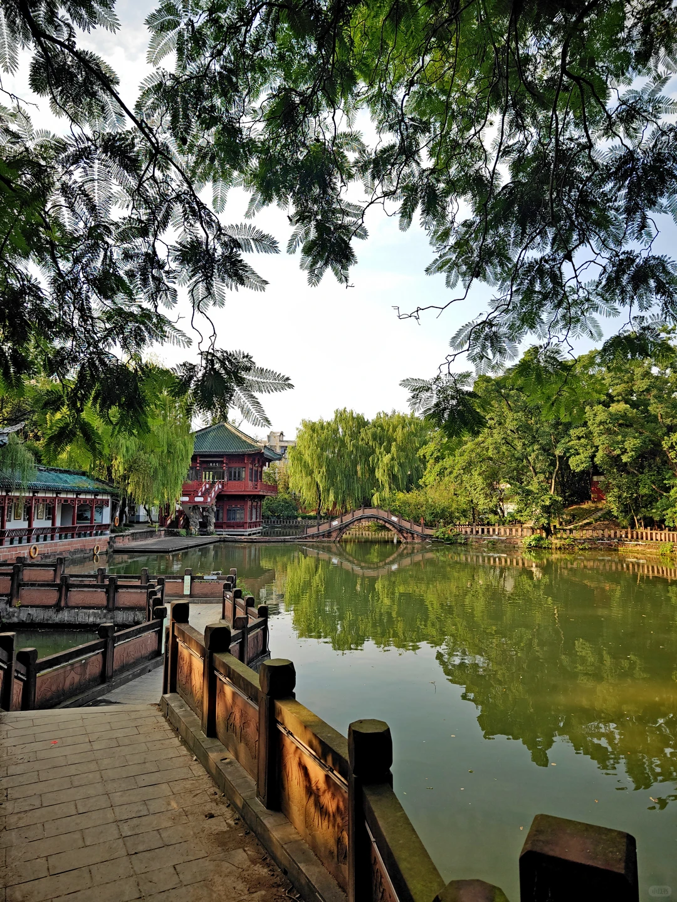
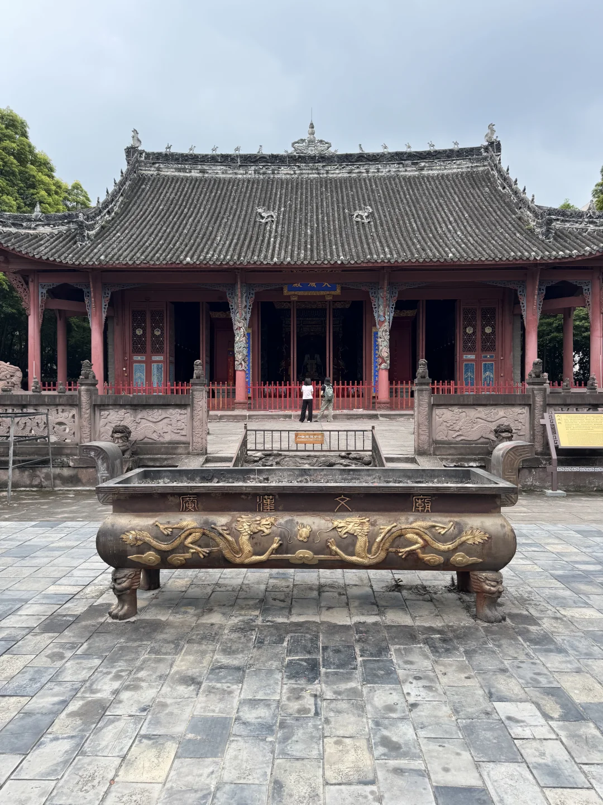
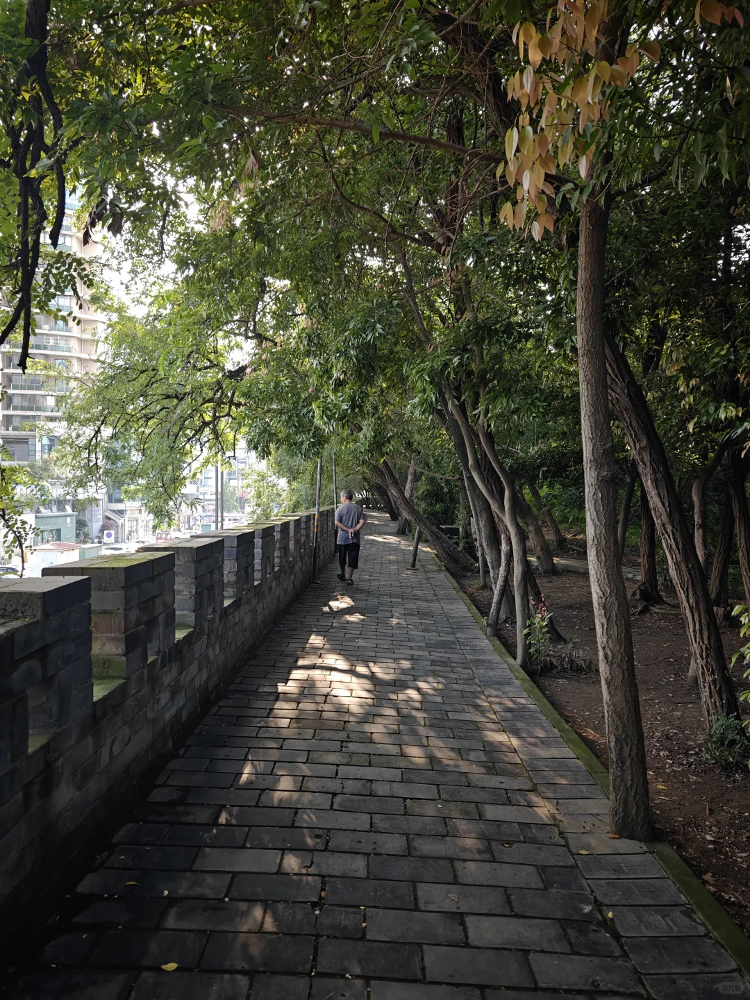

湖池与琯园
亭台、水面、古木与廊阁保留了城市园林的舒缓节奏。

房湖因唐代房琯任汉州刺史时开凿的湖池得名。历代文人曾在此游历，今天的公园把湖池园林、文庙、碑刻和雒城遗址叠合在一条步行线上。
这里适合慢走，而不是逐项打卡。先以水面和古木建立空间感，再进入文庙及碑刻区域，最后根据现场开放情况走到雒城城墙。
亭台、水面、古木与廊阁保留了城市园林的舒缓节奏。
石牌坊、雕刻与大成殿共同呈现川西文庙建筑细节。
碑刻和敬字惜纸传统，是理解地方文化的两条旁线。
汉代城墙和铭文砖让房湖不只是一座公园。
先以水面、树木和亭阁辨认园林的开合。从园林转向红墙、屋檐与院落的建筑秩序。依现场开放导向沿步道接近城墙，不进入围挡区域。



园内文物区域可能因修缮临时围挡；保保节等活动日期以当年公告为准。
四川省德阳市广汉市房湖路28号
出发前核验开放状态、票务或活动安排；到达方式与停车请使用实时地图。
房湖与老城街巷适合衔接茶馆、金丝面或晚餐；不预设具体店铺，临行用实时地图筛选。
查看附近餐饮开放范围与活动安排请查看目的地公告；地图可查询当日道路与营业信息。 背景资料整理：2026-09-20。票务与临时开放请查看最新公告。